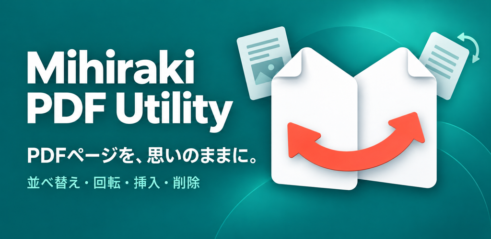

見開きPDFユーティリティ
見開き表示、分割、結合を自在に。Androidのための直感的なPDF編集ツール。
見開き表示、分割、結合を自在に。Androidのための直感的なPDF編集ツール。
見開きPDFユーティリティは、読者とクリエイターのために設計された多機能ツールです。自炊した書籍の整理、ドキュメントの結合、ページの並べ替えなど、直感的な操作で思い通りに編集できます。

2ページを横並びで表示。日本の書籍や漫画に合わせた「右開き（RTL）」にも完全対応しています。

見開き1ページを2つのページに分割。垂直（左右）と水平（上下）の両方の分割方向をサポートします。

サムネイルをドラッグするだけでページ順序を整理。直感的なインターフェースで編集が捗ります。

複数のPDFファイルを1つに結合したり、既存のPDFにページを追加したりできます。

本アプリはスマートフォン、タブレット、ChromeOSなど、様々な環境で快適に動作するように設計されています。